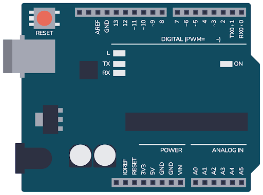
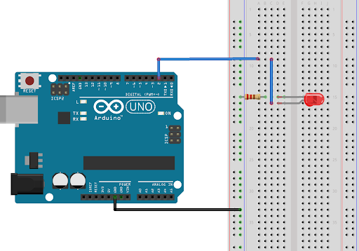

Arduino nu este doar o companie sau o serie de microcontrolere, ci un întreg ecosistem tehnologic care a revoluționat modul în care oamenii interacționează cu electronica și programarea. În esență, Arduino reprezintă o platformă open-source destinată dezvoltării de proiecte electronice interactive, fiind concepută astfel încât să fie accesibilă atât începătorilor, cât și utilizatorilor avansați.
La baza Arduino stă ideea de democratizare a tehnologiei. În trecut, lucrul cu microcontrolere necesita cunoștințe avansate de inginerie și echipamente costisitoare. Arduino simplifică acest proces prin combinarea unor plăci hardware ușor de utilizat cu un mediu software intuitiv. Astfel, oricine poate crea proiecte precum sisteme de automatizare, roboți, senzori inteligenți sau instalații interactive.Un aspect esențial al Arduino este structura sa hardware. Plăcile Arduino sunt construite în jurul unor microcontrolere care pot primi date de la senzori (temperatură, lumină, mișcare etc.) și pot controla diverse dispozitive (LED-uri, motoare, ecrane). Aceste plăci dispun de pini de intrare și ieșire care permit conectarea facilă a componentelor electronice. Flexibilitatea este unul dintre punctele forte, deoarece utilizatorii pot extinde funcționalitatea plăcii prin module suplimentare, cunoscute sub numele de „shield-uri”.

Pe partea software, Arduino oferă un mediu de dezvoltare integrat (IDE) simplu și ușor de învățat. Limbajul utilizat este bazat pe C/C++, dar simplificat pentru a fi accesibil. Programele, numite „sketch-uri”, sunt structurate în jurul a două funcții principale: setup() și loop(). Prima se execută o singură dată la pornirea dispozitivului, iar cea de-a doua rulează continuu, permițând controlul în timp real al componentelor conectate.Un alt element definitoriu este natura open-source a platformei. Atât designul hardware, cât și software-ul sunt disponibile public, ceea ce încurajează colaborarea și inovația. Comunitatea Arduino este extrem de activă, oferind tutoriale, biblioteci de cod și exemple practice. Acest lucru reduce semnificativ bariera de intrare pentru cei care doresc să învețe.
Arduino este utilizat într-o gamă foarte largă de domenii. În educație, este un instrument excelent pentru predarea conceptelor de programare și electronică. În industrie, este folosit pentru prototipare rapidă și dezvoltarea de sisteme embedded. În domeniul hobby, pasionații creează proiecte creative, de la case inteligente până la artă interactivă.Un avantaj major al Arduino este modularitatea și scalabilitatea. Proiectele pot începe de la idei simple, cum ar fi aprinderea unui LED, și pot evolua spre sisteme complexe care implică comunicații wireless, inteligență artificială sau integrare cu internetul lucrurilor (IoT). Această capacitate de extindere îl face potrivit atât pentru învățare, cât și pentru dezvoltare profesională.

Totuși, Arduino are și limitări. Puterea de procesare și memoria sunt relativ reduse comparativ cu alte platforme mai avansate. Din acest motiv, pentru aplicații complexe sau industriale la scară mare, pot fi necesare soluții mai performante. Cu toate acestea, pentru majoritatea aplicațiilor educaționale și de prototipare, Arduino rămâne o alegere excelentă.În concluzie, Arduino reprezintă mult mai mult decât un simplu set de componente electronice. Este o platformă care a transformat modul în care oamenii învață, experimentează și creează în domeniul tehnologiei. Prin accesibilitate, flexibilitate și sprijinul unei comunități globale, Arduino continuă să inspire inovația și să faciliteze dezvoltarea de proiecte care altădată ar fi fost greu de realizat.Apasati buttonul de mai jos pentru exercitii